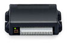

Лаборатория оснащена самым современным оборудованием:
осциллографами компаний LeCroy и Agilent Technologies;
генераторами Tabor Electronics, анализаторами спектра Good
Will и иными высокотехнологичными приборами.
Испытать устройство

Заключение
Корпус устройства разрушен. Для предотвращения дективации устройства методом грубой физической силы, рекомендуется увеличить прочность корпуса.